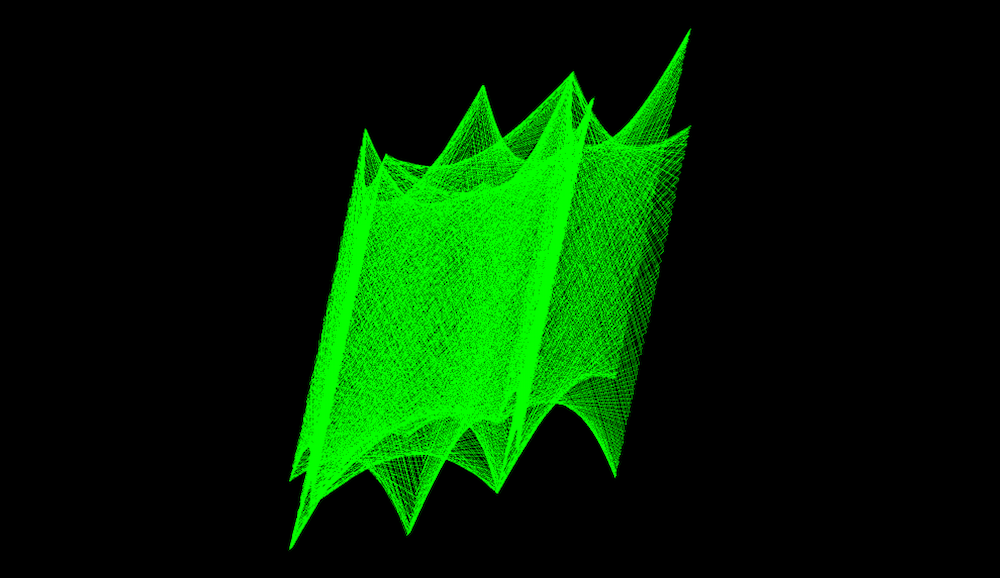

About
Demeteris Securities is a conceptual investment corporation that reveals the inner working and fatal consequences of the uncharted frontier of capitalism. Challenging the already blurry lines between the art and business worlds, the project revolves around the creation and sale of crypto-securities that encourage speculation on people’s inherent value. Our mock corporation will purchase from volunteers (including the audience and through an open call) the right to future use of their organs and digital identities, package these contractual rights into tradable securities, and then offer them for sale. By performing and precipitating this final wave of commoditization, we expose the absurd reality of our failing financial, economic, and social systems.

##The Death Rattle of Capitalism
Democracy and capitalism are facing unprecedented challenges. A pandemic, environmental collapse, and racial tensions are eroding the foundations of the global order established – or at least collectively imagined – in the twentieth century. As predicted in the economic theories of Karl Marx, the Republic of Plato, and the world-systems of Immanuel Wallerstein, economic and political power has fallen into the hands of elites who deploy propaganda to manipulate the masses into acquiescence.
Despite the diversity and complexity of the problems facing humanity as a whole, most members of the species still prioritize maximizing their individual wealth. Even people who are skeptical of the system believe that they must continue to participate for a lack of concrete alternatives for sustaining themselves and their families. But now, with the labor market in shambles and with the future of corporate hegemony in question, the likelihood of systemic change is greater than ever in recent memory.
One of the more puzzling trends in these troubled times is the popularization of complex securities trading. Securities are tradable instruments such as contracts, debts, and equities that represent the values of companies, commodities, and in the case of derivatives, other securities. Trading in securities is the “engine” of the capitalist system, enabling market participants to effectively raise capital and grow their enterprises. With high risks come high returns, so securities markets are notoriously, and perhaps inherently, unstable.
As a result, crashes have been a periodic occurrence ever since modern securities markets emerged in Holland in the seventeenth century. The rollercoaster movements of capital and financial markets create ripples, waves, and sometimes tsunamis that can devastate entire economic sectors. While efforts to regulate these markets may be necessary, they have the collateral effect of pushing investors farther and farther to the legal fringes in their quest for hidden and hitherto unregulated profits.
These uncharted territories reveal highly profitable yet risky investment possibilities: the subprime mortgage crisis of 2007 - 2009, the ongoing build up of high yield corporate debt, exotic derivative securities, and the irrational response of financial markets to the COVID-19 pandemic are revealing the troublesome dynamics of our risk addicted financial systems. Our addiction to risk is radically amplified by Artificial Intelligence (AI) powered high-frequency trading and frictionless zero-commission UX/UI-perfect stock trading platforms. Recent market movements, and in particular the current “kangaroo market,” are completely uncoupled from economic fundamentals.
Financial markets have rarely been so volatile, so it is ironic that their popularity with investors has never been greater. It wasn’t until the end of the twentieth century that trading in stocks became a common investment tool. Before then, it was the domain of the elites. Now, young and non wealthy people trade highly sophisticated securities and derivatives from their smartphones, using apps such as Robin Hood and eToro. Some may make a profit, but the majority of individuals lose, sometimes with tragic results. Recently, 20-year-old Alex Kearns committed suicide after accumulating a $700,000 debt from margin trading on Robin Hood.
##Securities as Art and Art as Securities
Demeteris Securities is not only ethically abhorrent, it is completely illegal. Although the ethical issues with our project are deliberately calculated to foster healthy debate about capitalism’s insidious plans for us in the near future, the illegal aspects of our project must be dealt with. First of all, our contracts for organs will include fine print statements certifying that the agreements that they purport to memorialize are in fact unenforceable under current legal regimes. Second, all of the promotional documentation and contract certificates will include a disclaimer indicating that they are in facts works of art.
It is unclear, however, whether such a disclaimer will place our contracts outside of the broad legal definition applying to securities. For example, the U.S. Securities and Exchange Act defines a security as “a contract, transaction or scheme whereby a person invests his money in a common enterprise and is led to expect profits solely from the efforts of the promoter or a third party.” The relevant EU regulation, the Markets in Financial Instruments Directive (MiFID), is similarly expansive, defining a security as a contract “giving the right to acquire or sell any such transferable securities or giving rise to a cash settlement determined by reference to transferable securities, currencies, interest rates or yields, commodities or other indices or measures.”
Would a court recognize our certificates as artistic statements merely because they identify themselves as such? If yes, then what is to keep financiers and entrepreneurs from freeing themselves from their regulatory burdens by re-classifying their activities as artistic? On the other hand, if a court would qualify our certificates as securities, and not art, it would be a testament to the limited recognition given to artistic and subservisive acts in the contemporary political order.
This bizarre intersection of art and financial instruments is especially relevant seen that, in recent decades, fine art has become a commodity. Several art funds (located mostly in the jurisdiction of Luxemburg) have been able to reap profits more reliably than many traditional investment funds. Spanning 2010 to 2015, the Artemundi fund’s diversified portfolio of fine art delivered a 17% average annual return. During the same period, the stock performance of 500 large companies listed on US stock exchanges (S&P 500) saw an average annual increase of around 11%.
Investment bankers from the Wall Street are even taking over the fine art market - not just as purchasers, but as brokers. Works of art are effectively being turned into tradable securities, and the art trade resembles more and more the Wild West of early capitalism. Investors frequently buy and trade multiple ownership shares in a single piece of artwork, much as investors buy equity in a corporation. They may also obtain loans on the basis of these ownership shares to purchase other, more expensive works. Unscrupulous dealers such as Inigo Philbrick have been known to take out loans from multiple, unknowing creditors on the basis of a single piece of art, which in some cases is not even legally owned.
Conversely, there are contemporary examples of financial activities that conceivably fall within the definition of art, or at least of cultural satire. Dogecoin is a cryptocurrency traded on a majority of platforms, with a market capitalization of $290 million and a daily transaction average of over DOGE Ð917 million. But make no mistake: the developer of dogecoin explicitly stated that it was created as “a joke currency.” From its website to its logo, the cryptocurrency relies heavily on the Shiba Inu dog meme and features frenetic, vivid, and lighthearted aesthetics, reminiscent of netart. The joke caught on, and for better or for worse, dogecoin is now a legitimate currency and investment.